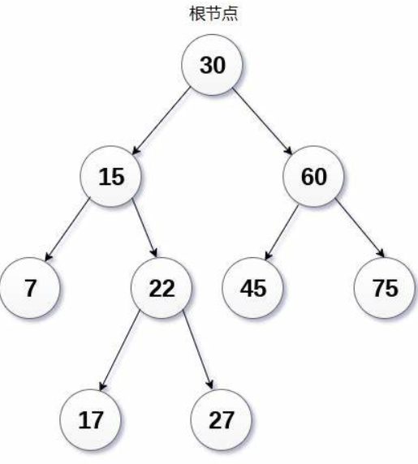

# 什么是二叉搜索树？
二叉搜索树也叫二叉排序树，它有一种特点，就是一个节点的左子树中的所有值永远小于这个节点，而右子树中的所有值都大于这个节点。如图所示：

图中的每个节点的左子树中的所有值都小于这个节点，右子树的值都有大于这个节点。
# 二叉搜索树的优点
它的查找效率比较高，最优的查找效率为 O (log)，最差的查找效率为 O (n) （平衡树和红黑树可以解决这个问题）
中序遍历二叉搜索树，会得到一个递增的序列。这会将搜索树中的所有值以递增的有序的方式输出。
# 实现二叉搜索树类
首先它也是普通的二叉树，只不过插入数据时我们要判断插入的数据一个往当前结点的那个位置插入。（比当前结点的值小则插入到左孩子，反之则插入右孩子。）有人说插入的值等于当前的值怎么办？我们可以选择覆盖掉与插入值相等的结点，也可以选择往左孩子或者右孩子插入。
首先他也由一个个结点构成，使用要先写出结点的结构。
typedef int type; | |
struct Node { | |
struct Node* Left; // 左孩子结点指针 | |
struct Node* Right; // 右孩子结点指针 | |
type data; // 数据 | |
}; |
接下来就是实现二叉搜索树类了，我们依然采用 c++ 面向对象的方式来实现二叉搜索树类。
首先二叉搜索树要能插入数据，删除数据，三种遍历，查找数据，删除整树等等
class SearchTree { | |
public: | |
SearchTree(type obj);// 构造二叉树，传入要插入的数据 | |
int InsertNode(type obj);// 插入数据 | |
int DelNode(type obj);// 删除某个数据 | |
int PreoTree();// 前序前序 | |
int InorTree();// 中序遍历 | |
int PostTree();// 后序遍历 | |
void DelTree();// 删除整个二叉树 | |
private: | |
int PreorderTree(Node* t);// 前序遍历递归函数 | |
int InorderTree(Node* t);// 中序遍历递归函数 | |
int PostorderTree(Node* t); // 后序遍历递归函数 | |
void DelNode(Node* t);// 用于递归删除结点的递归函数 | |
struct Node* root = nullptr;// 树根 | |
struct Node* temp = nullptr;// 临时变量 | |
}; |
# 插入数据操作
首先我们要准备一个临时变量 temp 用来记录树根指针 root 指向的位置，然后接下来的遍历操作就交给 temp 来了。然后再用一个临时变量记录 temp 的双亲结点，之后 new 一个新结点，存放好值然后等待 temp 寻找到要插入的位置。
然后使用 temp 一次一次向下遍历，但是与普通的二叉树不同的是，temp 每向下移动一次都要用待传入的值与当前结点中存放的值进行对比，如果小于当前值则向这个结点的左子树发现移动，如果大于则向这个结点的右子树方向移动。（不要忘记 temp 没移动一次都要记录一下 temp 的双亲结点哦）
当移动到合适的位置之后，然后使用待插入的值和 temp 的双亲结点中的值进行对比，如果待传入的值小于双亲的值则存放该数据的结点插入到双亲的左孩子节点位置上。反之则插入到右孩子结点位置上。
int SearchTree::InsertNode(type obj) | |
{ | |
// 记录根节点 | |
this->temp = this->root; | |
// 准备一个临时变量用于存放双亲结点 | |
struct Node* parent = nullptr; | |
// 先 new 好一个结点，然后进行数据存储 | |
struct Node* newNode = new Node; | |
newNode->data = obj;// 存放数据 | |
// 将新结点的左右孩子指针置空 | |
newNode->Left = nullptr; | |
newNode->Right = nullptr; | |
// 循环 | |
while (this->temp != nullptr) { | |
// 记录双亲结点 | |
parent = this->temp; | |
// 开始判断 | |
if (obj < this->temp->data) { | |
// 小于向左移动 | |
this->temp = this->temp->Left; | |
} | |
else { | |
// 大于向右移动 | |
this->temp = this->temp->Right; | |
} | |
} | |
if (obj < parent->data) { | |
// 小于父节点（双亲节点）的值则插入到左孩子节点 | |
parent->Left = newNode; | |
} | |
else { | |
// 大于父节点（双亲节点）的值则插入到右孩子节点 | |
parent->Right = newNode; | |
} | |
return 0; | |
} |
# 删除数据操作
首先我们得想一下，删除二叉树的一个结点时，与这些结点相关的左右孩子结点该怎么办？这个要删除的结点有好几种情况，一种是要删除的结点没有左右孩子；一种是要删除的阶段拥有一个左孩子或一个右孩子；还有一种情况就是要删除的结点同时拥有左右孩子。
第一种：结点没有任何左右孩子的情况
这种的最好办，直接释放掉这个结点所占用的空间即可。
第二种：结点拥有一个左孩子或者是右孩子的情况
这种的还行，只需记录下要删除的结点的父节点，任何判断出要删除的结点拥有左孩子结点还是右孩子结点，然后将父节点的左 / 右孩子指针指向待删除结点拥有的左 / 右孩子结点，最后释放掉要删除的结点即可，
第三种：结点同时拥有左右孩子的情况
这种可就复杂了。首先要先找到要删除的结点，然后需要记录下要删除的结点的双亲结点，然后我们有以下两者选择方法：
第一种是在要删除的结点的左子树中寻找最大值，然后将这个最大值赋值给要删除的结点，然后我们再将左子树中存放最大值的结点删除即可。
第二种是在要删除的结点中的右子树中寻找最小值，然后将这个最小值赋值给要删除的结点，然后我们再将右子树中存最小值的结点删除即可。
以上的方法都是为了保证二叉搜索树的性质。
然后我们在删除存储最大值或最小值的结点时要注意它有没有左右孩子。
如果我们选择第一种方法，那么由于它是最大值，所以不存在右孩子，如果它有左孩子则直接将左孩子接到最大值结点的双亲结点上。
如果我们选择第二种方法，那么由于它是最小值，所以不存在左孩子，如果它有右孩子则直接将右孩子接到最小值结点的双亲结点上。
最后释放掉最大值或最小值结点即可。我们实现时选择在左子树中寻找最大值。
int SearchTree::DelNode(type obj) | |
{ | |
// 临时变量用于记录根节点 | |
this->temp = this->root; | |
// 临时变量用于记录双亲结点 | |
struct Node* parent = nullptr; | |
// 寻找要删除的节点 | |
while (this->temp != nullptr && this->temp->data != obj) { | |
// 记录双亲 | |
parent = this->temp; | |
if (obj < this->temp->data) { | |
// 小于往左子树寻找 | |
this->temp = this->temp->Left; | |
} | |
else{ | |
// 大于往左子树寻找 | |
this->temp = this->temp->Right; | |
} | |
} | |
if (this->temp == nullptr) { | |
// 没有找到则返回 | |
std::cout<<"没有找到" << std::endl; | |
return -1; | |
} | |
// 第一种情况，要删除的节点没有左右孩子，只需释放这个结点即可 | |
if (this->temp->Left == nullptr && this->temp->Right == nullptr) { | |
if (parent == nullptr) { | |
// 双亲结点为空的话那要删除的节点就是根节点 | |
// 可以选择删除根节点，不过这样会导致无法往这棵树中插入数据 | |
// 当然可以在插入数据时判断根结点指针是否为空，为空则 new 一个结点即可 | |
this->root = nullptr; | |
} | |
else if (parent->Left == this->temp) { | |
// 要删除的是父节点的左孩子 | |
// 先将指向它的指针置为空 | |
parent->Left = nullptr; | |
} | |
else{ | |
// 要删除的是父节点的右孩子 | |
// 先将指向它的指针置为空 | |
parent->Right = nullptr; | |
} | |
// 释放结点 | |
delete this->temp; | |
this->temp = nullptr; | |
} | |
// 第二种情况，要删除的节点有一个子节点（左孩子或者右孩子） | |
else if (this->temp->Left == nullptr || this->temp->Right == nullptr) { | |
// 先找出待删除的节点拥有那个孩子结点 | |
struct Node* child = (this->temp->Left == nullptr) ? this->temp->Left : this->temp->Right; | |
if (parent == nullptr) { | |
// 双亲结点为空的话那要删除的节点就是根节点，让孩子结点变成根节点 | |
this->root = child; | |
} | |
else if (this->temp == parent->Left) { | |
// 待删除的结点是父节点的左孩子节点 | |
parent->Left = child; | |
} | |
else{ | |
parent->Right = child; | |
} | |
// 释放结点 | |
delete this->temp; | |
this->temp = nullptr; | |
} | |
// 第三种情况，要删除的结点同时拥有左右孩子节点，那么则在左子树中寻找存储最大值的结点， | |
// 然后将最大值存入要删除的结点，然后此时删除掉最大值原来所在的结点即可 | |
else { | |
// 现在要在左子树寻找最大值 | |
struct Node* succParent = this->temp;// 记录后继结点的父节点 | |
struct Node* succ = this->temp->Right;// 记录后继结点 | |
// 寻找最大值 | |
while (succ->Left != nullptr) { | |
succParent = succ; | |
succ = succ->Left; | |
} | |
this->temp->data = succ->data; | |
// 将寻找到的最大值赋值给要删除的结点，此时可以抽象成最大值结点和要删除的节点发送了替换 | |
// 此时只需要删除掉存储最大值的结点即可，原先 temp 记录的结点就不管了 | |
// 此时要删除的结点变成了左子树中存储最大值的结点 | |
// 如果要删除的节点有左右孩子则让父节点的左右指针指向他们即可 | |
if (succParent->Left == succ) { | |
succParent->Left = succ->Right; | |
} | |
else { | |
succParent->Right = succ->Right; | |
} | |
// 释放结点 | |
delete succ; | |
} | |
return 0; | |
} |
# 查找数据操作
我们从根节点开始，用要查找的值与结点对比，如果小于该结点的值则向左子树移动，反之则向右子树移动，如果等于则打印出来或者做其他操作。如果一直移动到底部也没有找到，那就表示没有存储该结点的值。
void SearchTree::SearchNode(type obj) | |
{ | |
// 记录根节点 | |
this->temp = this->root; | |
// 开始寻找 | |
while (this->temp != nullptr) { | |
if (obj == this->temp->data) { | |
// 找到了则打印，也可以做其他操作 | |
std::cout << this->temp->data << std::endl; | |
return; | |
} | |
else if (obj < this->temp->data) { | |
// 向左寻找 | |
this->temp = this->temp->Left; | |
} | |
else { | |
// 向右寻找 | |
this->temp = this->temp->Right; | |
} | |
} | |
std::cout << "没有找到" << std::endl; | |
return; | |
} |
# 遍历整树操作
三种遍历操作可以去之前的基本二叉树中查看，这里就不多介绍了，都一样的。
# 删除整树操作
依旧是后续遍历删除整树，这里不多介绍了，可以去之前的基本二叉树那篇文章查看。